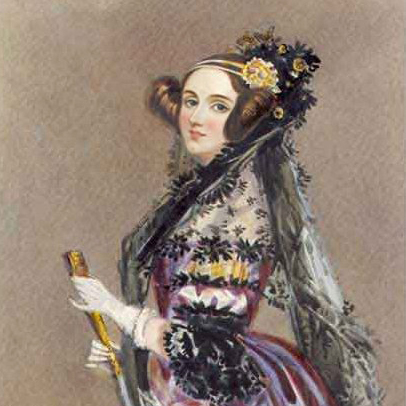

Famous Women

Ada Lovelace
Ada Lovelace
(1815–1852)
An analyst of Charles Babbage's analytical engine and is often described as the "first computer programmer."

Grace Hopper
(1906–1992)
A United States Navy officer and the first programmer of the Harvard Mark I, known as the "Mother of COBOL". She developed the first ever compiler for an electronic computer, known as A-0.
...
Frances Allen
(1932–)
The first female IBM Fellow in 1989. In 2006 she became the first female recipient of the ACM's Turing Award.

Barbara Liskov
(1939–)
Developed the Liskov substitution principle. Liskov was also the winner of the Turing Prize in 2008.